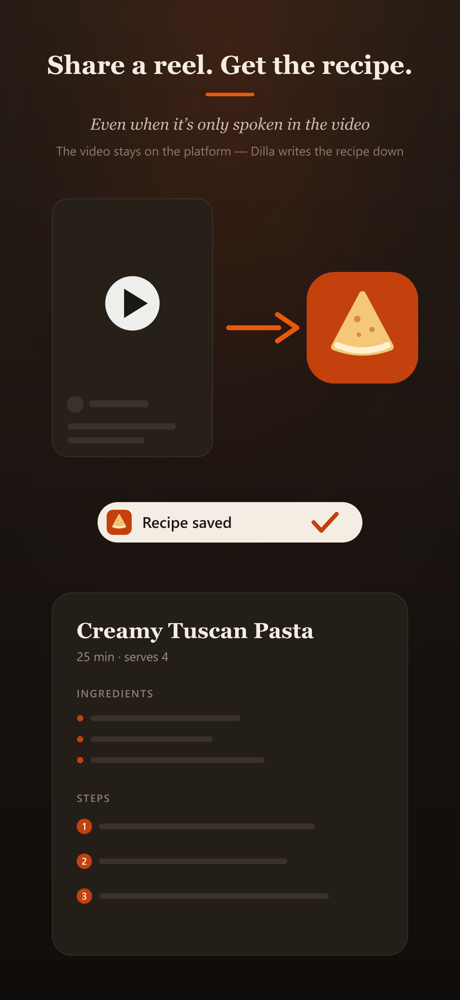
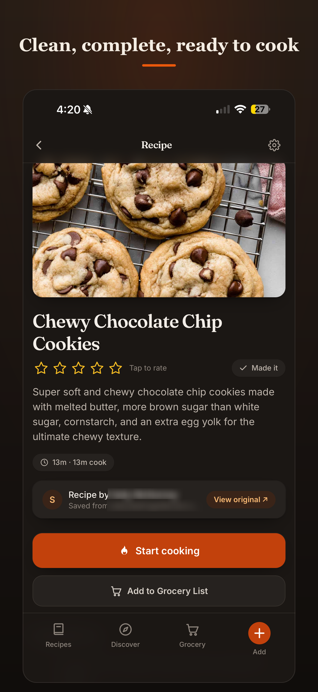
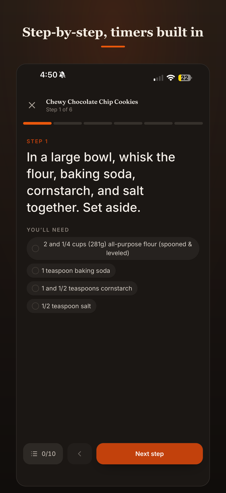
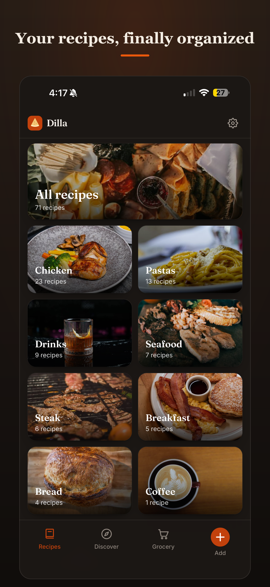
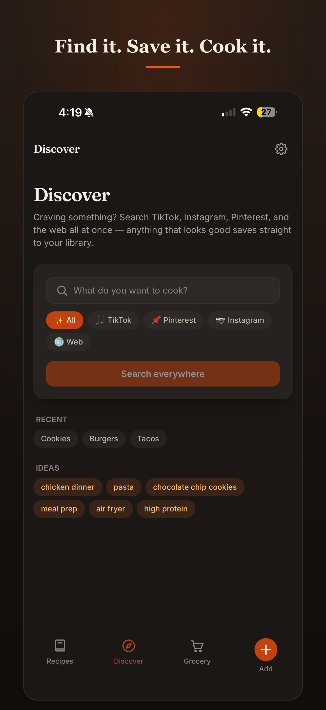
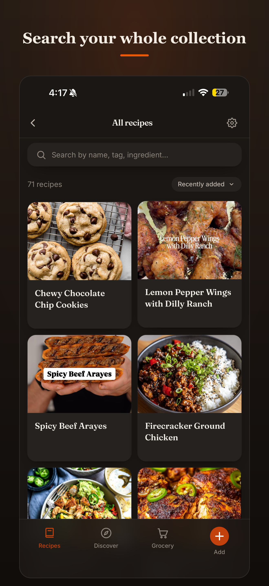
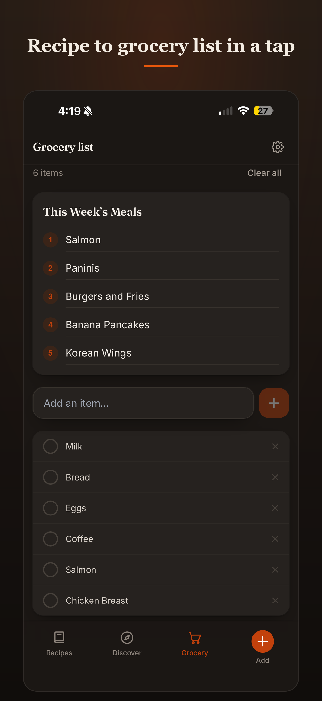

Dilla
DillaPress kit
Everything you need to write about Dilla. Questions or App Store promo codes: mitchellhartjes@gmail.com.
Fact sheet
- What
- iOS app that turns saved social-media recipes into a real cookbook
- Platforms
- iPhone (App Store) + web app
- Pricing
- Free: 20 imports/month (incl. 5 video) · Pro: $4.99/month or $29.99/year — 200 imports/month (incl. 40 video)
- Launched
- App Store, August 2026
- Company
- Solo developer, USA
- Contact
- mitchellhartjes@gmail.com
- Web
- recipe-vault-mh.netlify.app
Boilerplate — copy freely
Dilla is an iOS app that turns saved social-media recipes into a real cookbook. Share a TikTok, Instagram reel, Pinterest pin, website, or screenshot to Dilla and it writes the full recipe out — title, ingredients, numbered steps — even when the recipe is only spoken aloud in the video. When a post says "recipe on my blog," Dilla follows the link and gets the real recipe. Every import keeps the creator's attribution and a link back to the original. Dilla also includes step-by-step Cook Mode with automatic timers, grocery lists, and weekly meal planning.
Founder
Dilla is built by Mitch Hartjes, a solo developer.
Logos
{kind=link}
{kind=link}
{kind=link}
{kind=link}
Screenshots
{kind=link}

The share story{kind=link}

Recipe page{kind=link}

Cook Mode{kind=link}

Library{kind=link}

Discover{kind=link}

Collection{kind=link}

GroceryThe story in one paragraph
Everyone saves recipes — into Instagram collections, TikTok favorites, Pinterest boards — and almost nobody cooks them, because a saved video isn't a recipe you can cook from. Dilla closes that gap: share the post, keep scrolling, and a written recipe lands in your library with the creator credited and linked. It reads captions, follows "link in bio" trails, and listens to videos where the recipe is only ever spoken out loud.